7. Processing and Accessing the Results¶
7.1 Outputs of the forward simulations¶
Once your job has run, you will be able to access the output of the simulation in three ways:
Clicking on the ‘Control’ tab in the ‘Simulation’ section of the ‘Forward Modelling’ panel (see section 5.7):
It shows a list of the simulation jobs that have been launched with, among others, the corresponding ‘Name’, ‘Description’, ‘Status’ and ‘Date’ of the run; if you do not see the event you have just run then click ‘Refresh list’ to load this in. By clicking on the blue-eye icon next to each run you will be redirected to the ‘Results’ section showing the selected run and all its outputs (in the far left of the opened panel) as described in the next point.
Directly checking under the ‘Results’ section:
The simulation results can be searched using the ‘Open Run’ button which is on the top left. This enables you to search for runs that for instance involve earthquakes in a range of magnitudes (as shown in Figure 7.1), or a range of depths, latitudes, longitudes, etc. For a full list of the parameters for which it is possible to search for, please see the ‘Terms’ drop down menu. You can then select the simulation of interest from the list of previous runs satisfying the searching criteria that appears on the screen after clicking the ‘Search’ button. As in case 1), the far left of the panel will then show the outputs of this simulation.
Using the ‘iRODS’ panel: see section 7.4.
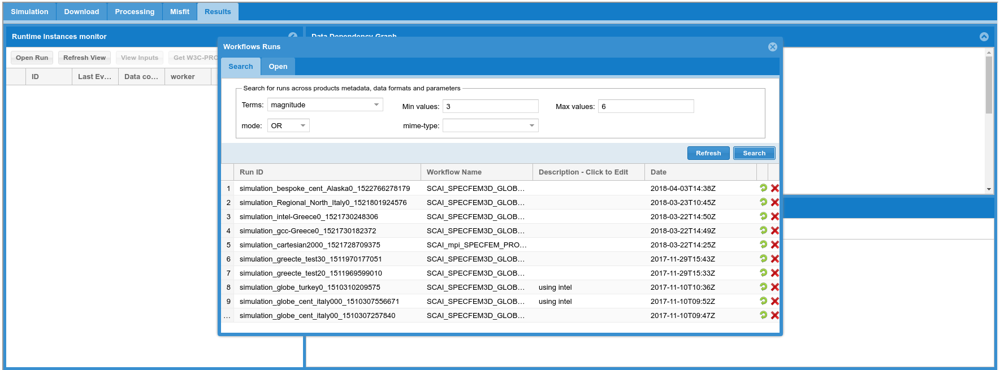
Figure 7.1: Example of searching simulations involving events in a selected magnitude range.
Focusing now on points 1) and 2), selecting an output from the left hand part of the ‘Results’ panel will bring up a provenance diagram in the top right window of the ‘Results’ section marked as ‘Data Dependency Graph’. If this is done for instance for the .kml file that is output, all of the constituent inputs needed for this result are shown by a dark blue circle bounded in yellow, and the outputs are shown by a simple dark blue circle.
The bottom right window, marked as ‘Data products’, gives further details of the output file that is selected and lists possible errors occurred during the production of this output. To open the file concerned, click the blue link marked ‘Open’ or the one marked ‘Download’ appearing in the dialog window. Moreover, with the button ‘Produce Download Script’ you can get a piece of code to download the selected output via gsissh terminal.
Using the ‘Search’ button in the ‘Data products’ section of the ‘Results’ panel it is also possible to search for all the output files of a specific mime-type (e.g., png, kmz, etc.) for a specific simulation.
Finally, you can also visualise the input files for the selected simulation, such as the quakeML file, which contains information about the source or sources that are input into the model. This is done using the ‘View Inputs’ button on the top left of the ‘Results’ panel.
7.1.1 Waveform outputs¶
The primary outputs of any seismic simulation are the recorded waveforms. These can be viewed most simply as a .png file as shown in figure 7.2. To access these figures, after selecting a given simulation (as explained above), use the ‘Search’ button in the ‘Data products’ window (of the ‘Results’ panel) to search for ‘image/png’ type of files. Otherwise, waveforms can be downloaded as seed files searching and downloading ‘application/octet-stream’ mime-type files.
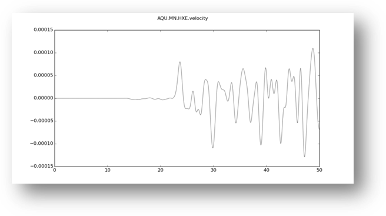
Figure 7.2: Example of waveform output.
The simulation code produces one file for each of the three components of a seismic station and, depending on the Par_file set up (see Appendix 1), the seismograms can be in displacement, velocity or acceleration, or all of them.
The three components of different seismometers that are output can also be viewed in a more interactive form, by downloading the *.kmz file that is automatically output from the simulation run and viewing it in Google Earth as shown in Figure 7.3. This kmz file can be downloaded by searching for a mime-type ‘application/vnd.google-earth.kmz’ in the ‘Search’ section of ‘Data products’.
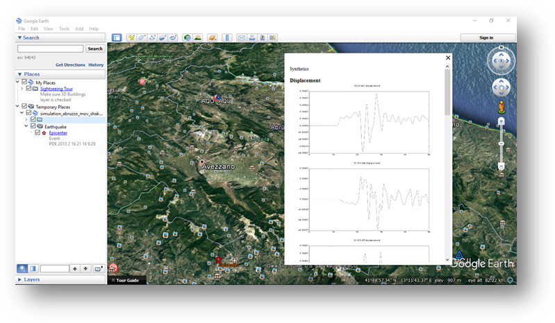
Figure 7.3: Three components of a synthetic seismogram produced for an earthquake in Central Italy, observed on the interactive Google Earth tool. The seismograms are shown in displacement, velocity and acceleration.
7.1.2 Animation outputs¶
The VERCE platform can also be used to produce animations or movies of the waveforms propagating out from the simulated earthquake event. These animations can be projected onto the Earth’s surface as in the snapshot example of Figure 7.4, or can show the propagation over all the external faces of the mesh (i.e., topography+vertical edges+bottom) depending on the Par_file set up as described in Appendix 1.
The movie file *.mp4 is automatically output from the portal and can be downloaded by searching for a mime-type ‘application/vnd.google-earth.kmz’ in the ‘Search’ section of ‘Data products’ (in the ‘Results’ panel). The animations shown at the top of the movie file and the one on the bottom left (Figure 7.4) represent the three components of the waveform velocity propagation, while the animation at the bottom right is the instantaneous peak ground velocity, i.e. a map of the maximum ground velocity for each time step of the simulation.
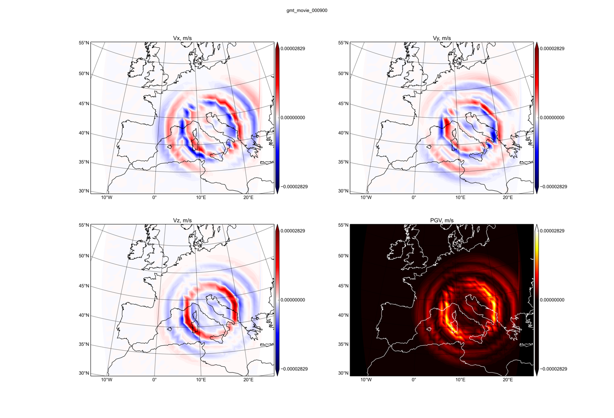
Figure 7.4: Snapshot of the movie for an earthquake in Central Italy produced from the VERCE platform using a regional simulation in SPECFEM3D_Globe.
7.1.3 Other outputs¶
The portal outputs can also be processed externally with your own routines to produce, for example, ground motion maps as shown for an event in Northern Italy in Figure 7.5. In particular, this kind of maps can be obtained by processing a binary file called shakingdata produced in output by SPECFEM3D_Cartesian if in the Par_file the user sets the flag
CREATE_SHAKEMAP = .true.
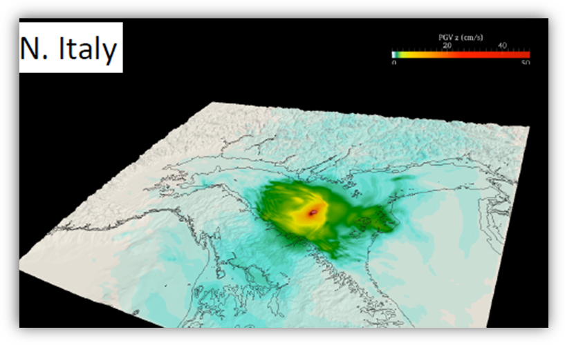
Figure 7.5: A ground shaking map produced with SPECFEM3D_Cartesian for an event occurring in Northern Italy.
One of the main changes that will be introduced in the next release of the portal (autumn/winter 2017) is the automatic production, through a dedicated workflow in the portal, of such ground motion maps, i.e. PGD, PGV and PGA maps. A single *.png picture containing the three maps will be generated from the automatic processing of the shakingdata file.
7.2 Downloading observed data¶
One of the main goals of a seismological analysis is the comparison of simulated results with observed data. Thus, after running a waveform simulation, the portal allows users to download from European data archives the recorded seismograms corresponding to the simulated earthquake.
The section marked as ‘Download’ under the ‘Forward Modelling’ panel is dedicated to this task and it is composed by the following sub-sections that guide the users to launch a data -download job.
’Setup’ tab:
A list of all the simulations that have been run is shown in this window. By selecting one of them, the information on the corresponding earthquake (source location, origin time) and run (NSTEP, DT) are automatically passed to the portal thanks to the metadata stored along with each simulation job.
‘Submit’ tab:
In the upper window you see the input parameters for the download job based on the selection in the previous tab; in the lower window you can setup the submission parameters, in particular the specific workflow and the number of cores of the HPC resource to run the data-download job (see the example in Figure 7.6). Click on ‘Submit’ on the lower right to launch the job.
‘Control’ tab:
As for the case of simulation jobs in section 7.1, this window shows a list of the download jobs that have been launched and their corresponding status, among other information. The ‘blue-eye’ icon next to each run links you again to the main ‘Results’ page where this time you visualize the outputs of the selected data-download job and the provenance graphs.
Otherwise, the outputs can be accessed by searching for the specific download job directly from the ‘Results’ panel (see section 7.1) or from the ‘iRODS’ panel (see section 7.4).
The output files of a data-download job are both seed and png files of the recorded traces downloaded from European archives. Use the ‘Search’ button in the ‘Data products’ window of the ‘Results’ tab to search for mime-type ‘application/octet-stream’ or ‘image/png’, respectively.
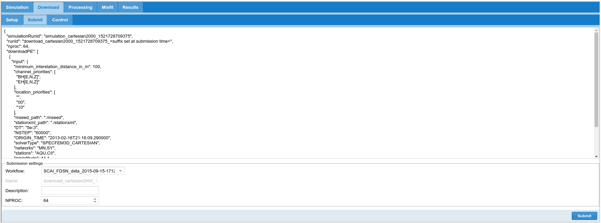
Figure 7.6: Example of submission settings for a data-download job.
7.3 Waveform processing¶
Once both a simulation job and a download job have been run, users can exploit another feature of the portal to pre-process observed and synthetic waveforms in order to prepare them for comparison analyses.
In the ‘Forward Modelling’ panel, by clicking on the ‘Processing’ tab you should go through the following sub-sections to set up and launch a processing job.
‘Data Setup’ tab:
The window on the top left shows a list of the waveform simulations that have been run, while the window on the top right shows a list of the data-download jobs that have been run. By selecting a simulation and a download run, a list of the seismic stations involved in the two jobs appears in the window below and the portal automatically highlights the common stations, i.e. those for which both data and synthetics are stored in its database. Use the checkbox on the left of each station to select those for which you are interested in processing both simulated and recorded seismograms in order to then compare them.
‘Processing Setup’ tab:
Here you can built-up a customized pipeline of processing analyses to be applied to the recorded and simulated waveforms selected in the previous panel. A list of the most common seismological processing functions (here called Processing Elements, and abbreviated to PEs) is reported in the far left window. Drag the selected PEs into the top right window following the order of the operations you want to apply on the seismograms.
For each PE of the pipeline you can choose to apply the operation on both data and synthetics or on just one of them using the checkboxes ‘raw’ and ‘synt’. As an example, usually the operation of removing the instrument response (represented by the PE remove_response) is applied only on the raw data, while on the synthetics one applies a pre-filtering function (pre_filter PE) to replicate the bandpass filter done by remove_response function on the data but without any deconvolution (see Figure 7.7). Moreover, the checkbox ‘visu’ allows you to produce a png file showing the result of the specific analysis, while the checkbox ‘store’ allows to also store the processed seismogram as a seed file.
For each PE you can also modify the corresponding parameters. Clicking on the row of a given PE in the ‘PE Workflow’ window, the corresponding parameters appear in the window below and you can set up, for example, the type of de-trend, the type of taper and its percentage, the limit frequencies for the selected filter.
Finally, on the top of the ‘PE Workflow’ window a drop down menu allows to select if the output of the processing will be in displacement, velocity or acceleration, and with a checkbox you can decide to rotate the seismic traces from NS and EW to radial and vertical components.
‘Submit’ tab:
As in the case of section 7.2, this tab shows a summary of the set up for the processing job, in particular the list of stations to which the processing will be applied and a list of the processing operations that compose the custom pipeline. Then, you can setup the submission parameters in the lower window and launch the processing job by clicking on ‘Submit’ on the lower right.
‘Control’ tab:
As previously, the window shows a list of the processing jobs that have been launched and the blue-eye icon links to the main ‘Results’ page where the outputs of the selected job can be explored together with the provenance graphs. The outputs can be also accessed by searching for the specific processing job directly from the ‘Results’ panel (see section 7.1) or from the ‘iRODS’ panel (see section 7.4).
The output products of a processing job can be png files of the processed traces, if the option ‘visu’ is checked, or/and seed files containing the processed seismograms, if the option ‘store’ is on (see above). Use the ‘Search’ button in the ‘Data products’ window of the ‘Results’ tab to search for mime-type ‘image/png’ or ‘application/octet-stream’, respectively.
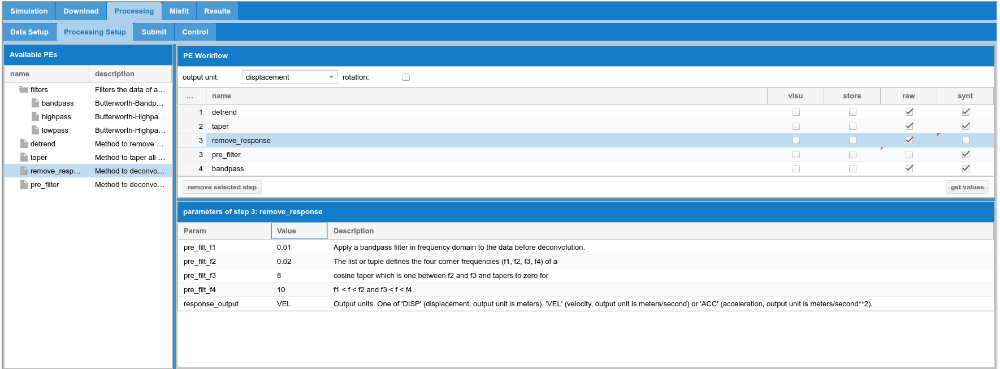
Figure 7.7: Example of custom pipeline of processing functions to be applied on observed and synthetic seismograms.
7.4 Misfit calculation¶
After simulating the seismic wave field, downloading the raw seismic data and pre-processing both, the VERCE portal allows users to compare synthetic and recorded seismograms and to quantitatively assess the goodness of fit. Evaluating this fit is essential to approach the inverse problem in seismology and there are numerous algorithms and procedures to accomplish this task. In the portal we have so far implemented two different established techniques for misfit calculation and a third option that combines the two:
PYFLEX
This is a python port (L. Krisher; http://krischer.github.io/pyflex) of the fortran code FLEXWIN (Maggi et al., 2009; http://geodynamics.org/cig/software/flexwin). Considering full observed and synthetic traces, the code selects a set of time-windows suitable for waveform comparison based on given input parameters and estimates cross-correlation, time-shift and amplitude ratio within each window. The code allows for an automated selection of the windows handling large data volumes and also complex 3D simulated waveforms, hence it is particularly useful for iterative tomographic inversions (Maggi et al., 2009). For a complete description of the method and the parameters see the manual of PYFLEX (or FLEXWIN).
In the portal this option corresponds to ‘misfit_type = pyflex’.
Kristeková’s misfit method
This is a python code based on the method developed by Kristeková et al. (2006) and Kristeková et al. (2009). The method compares observed and synthetic full-waveforms and allows the following time-frequency (TF) misfit criteria to be estimated:
- time-frequency envelope misfit (TFEM)
- time-frequency phase misfit (TFPM)
- time envelope misfit (TEM)
- time phase misfit (TPM)
- frequency envelope misfit (FEM)
- frequency phase misfit (FPM)
- envelope misfit (EM)
- phase misfit (PM)
This method allows for comparing arbitrary time signals in their entire TF complexity, thus providing a detailed TF anatomy of the disagreement between two full signals from the point of view of both envelope and phase (Kristeková et al., 2009). For a complete description of the method see Kristeková et al. (2006) and Kristeková et al. (2009).
In the portal this option corresponds to ‘misfit_type = time_frequency’.
PYFLEX + Kristeková’s misfit method
In this case the time windows are selected using the code PYFLEX and then the time-frequency misfit criteria are estimated on this windows using Kristekova’s method.
In the portal this corresponds to ‘misfit_type = pyflex_and_time_frequency’.
The section of the VERCE portal for misfit calculation is accessible through the ‘Misfit’ tab in the ‘Forward Modelling’ panel and it consists of the following sub-sections that allows for the set-up of a misfit job.
- ‘Setup’ tab:
Select one of the processing job that have been run and that are listed in the upper window of this panel. Then select the ‘Misfit type’ from the drop-down menu considering that
- ‘pyflex’ corresponds to option 1 above
- ‘time_frequency’ corresponds to option 2 above
- ‘pyflex_and_time_frequency’ corresponds to option 3 above
For each misfit procedure the lower window of the panel shows the corresponding parameters that should be set up by the user. In particular, for option 1 – ‘PYFLEX’ the tuning parameters control the window selection and are fully described in the manual of the code; for option 2 – ‘Kristeková’s misfit method’ the main parameters are the minimum and maximum period at which the waveforms have been filtered; option 3 – ‘PYFLEX + Kristeková’s misfit method‘ contains all the parameters of the two previous options. (See Figure 7.8).
‘Submit’ tab:
A summary of the chosen misfit method and set up parameters is shown in the upper window of this section. Then, you can setup the submission parameters in the lower window and launch the misfit job by clicking on ‘Submit’ on the lower right.
‘Control’ tab:
As always, the window shows a list of the misfit jobs that have been launched and the blue-eye icon links to the main ‘Results’ page where the outputs of the selected job can be explored together with the provenance graphs. The outputs can be also accessed by searching for the specific misfit job directly from the ‘Results’ panel (see section 7.1) or from the ‘iRODS’ panel (see section 7.4).
The output products of a misfit job are png files showing the waveform comparison for each component of each selected seismic station. The figures are different depending on the misfit option chosen in the ‘Setup’ tab (see examples in Figures 7.9 and 7.10). To access these output files use the ‘Search’ button in the ‘Data products’ window of the ‘Results’ tab searching for mime-type ‘image/png’.
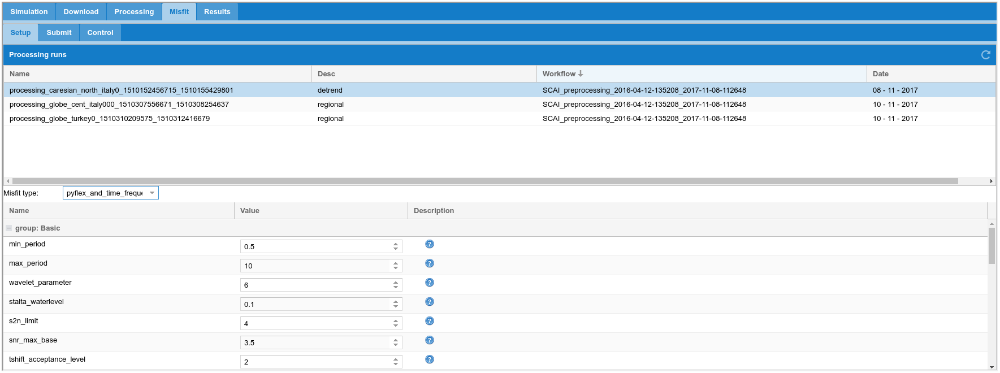
Figure 7.8: Example of the set-up of a misfit job using in combination PYFLEX and Kristeková’s method.
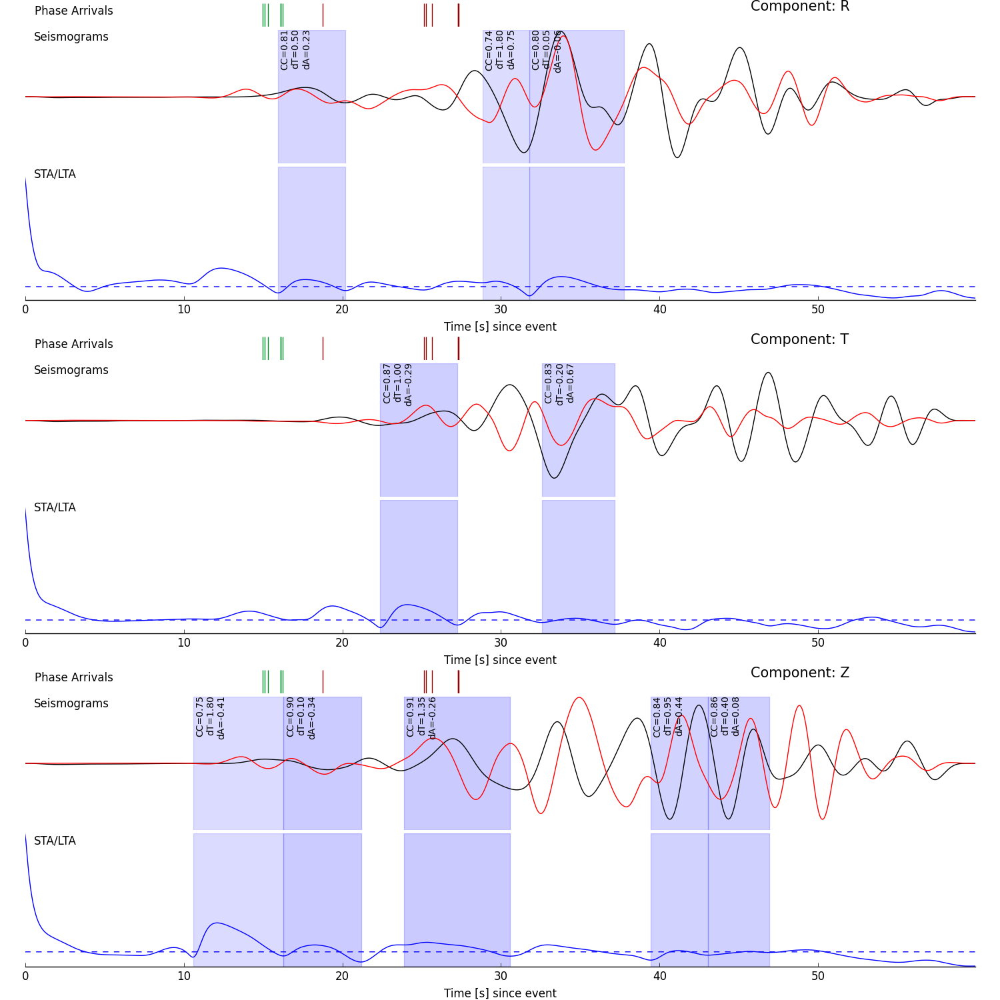
Figure 7.9: Example of an output file produced by calculating the misfit using PYFLEX. For each component of each station the figure shows the observed data in black, the synthetic trace in red and the short-term average/long-term average ratio in blue; the windows selected by the code are highlighted.
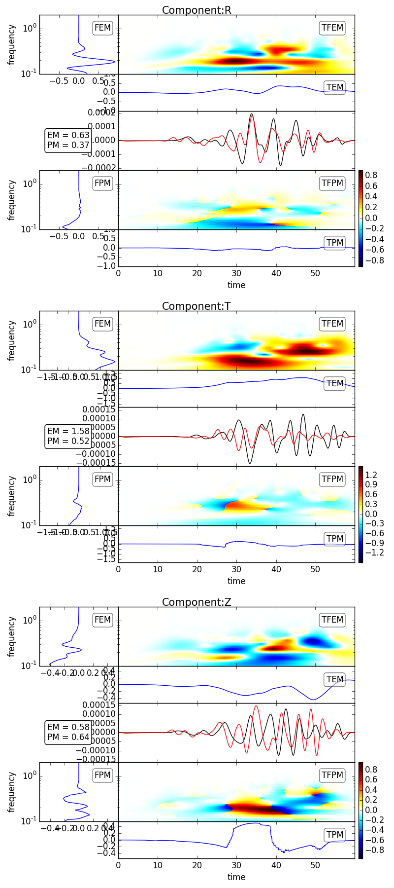
Figure 7.10: Example of an output file produced by calculating the misfit using Kristeková’s method. For each component of each station the figure shows the observed data in black, the synthetic trace in red; moreover, it shows the Kristeková’s misfi criteria TFEM, TFPM, TEM, TPM, FEM, FPM, EM, PM (see the text for details).
7.4 Accessing the results through iRODS¶
After any of the jobs described above (simulation, download, processing and misfit) is finished, the output products are shipped from the HPC resource, that performed the calculation, to the store repository of the VERCE portal. This storage is managed through iRODS that provides a repository shared among the federated nodes of the VERCE organisation. How to create an account in iRODS is described in section 3 of this manual, and after that you can log in selecting the ‘IRODS’ panel in the portal main menu (see Figure 7.11).
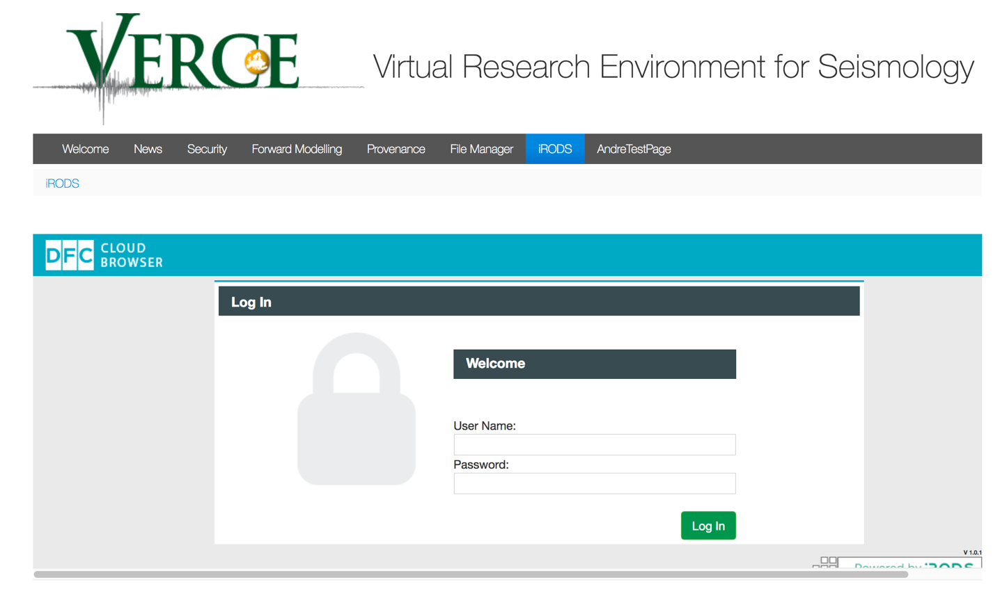
Figure 7.11: Screenshot of the ‘IRODS’ panel in the VERCE portal
Entering iRODS gives you access to your personal folder where you can navigate the results of all your completed jobs (of any type) as anticipated above. The run results are organised in trees of subfolders with the main directory called using the ‘Name’ you have chosen for your job (see section 5.6), as shown for example in Figure 7.12.
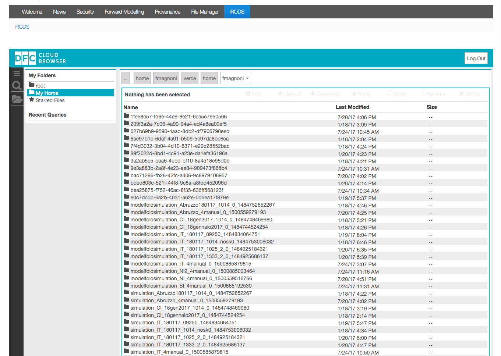
Figure 7.12: Example of the iRODS subfolder structure containing the results of the jobs.
A given job can be selected by double-clicking on the relative folder and, navigating the subdirectories, you can access all the same input and output files of each job that have been described in the above sections.
It is very important that in order to visualise or download any output or input data from the portal, both via the ‘Results’ tab or the ‘iRODS’ tab, you always need to firstly log in into the ‘iRODS’ panel (Figure 7.11) because the storage database is accessible only to authenticated users.